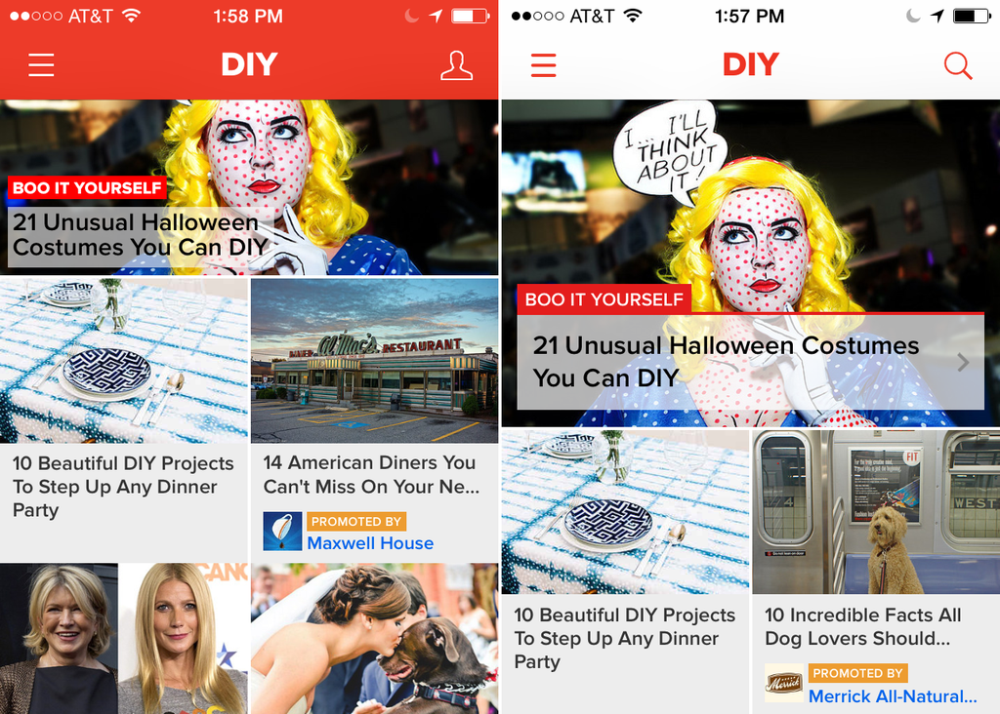
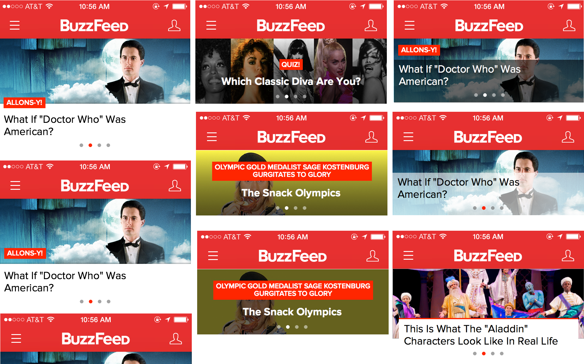
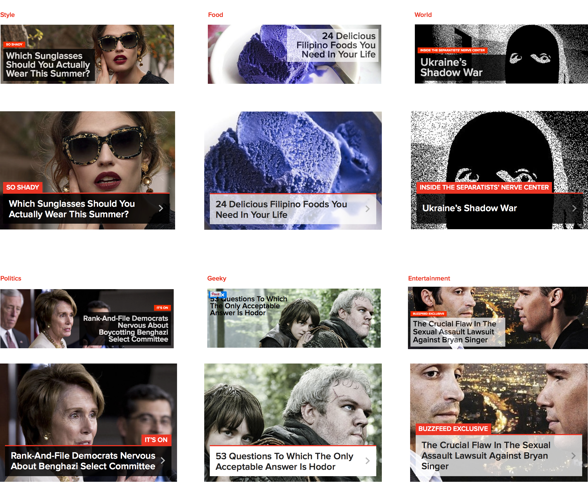
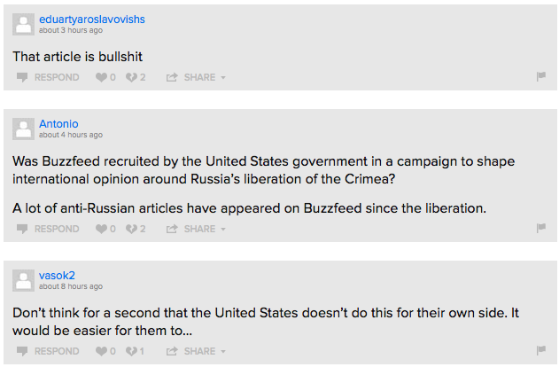
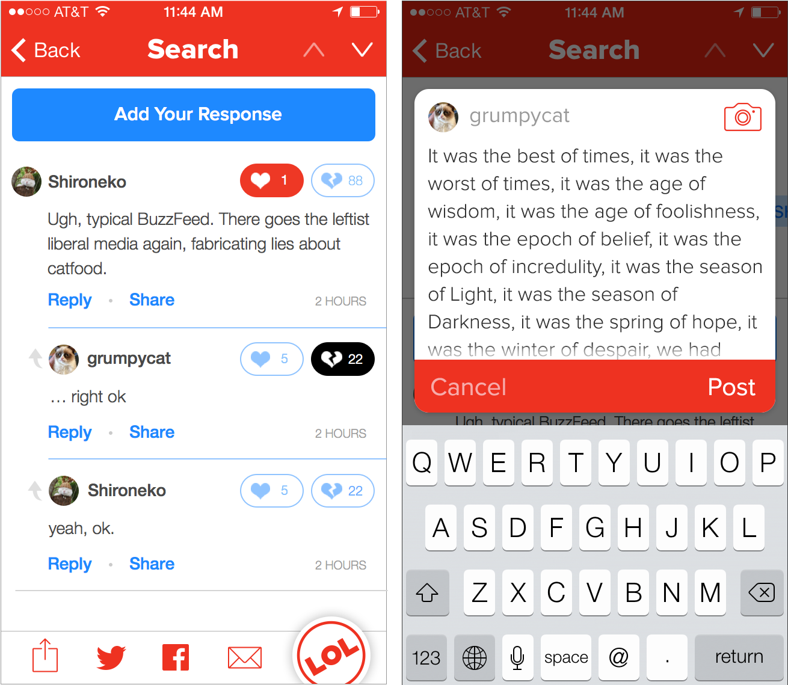
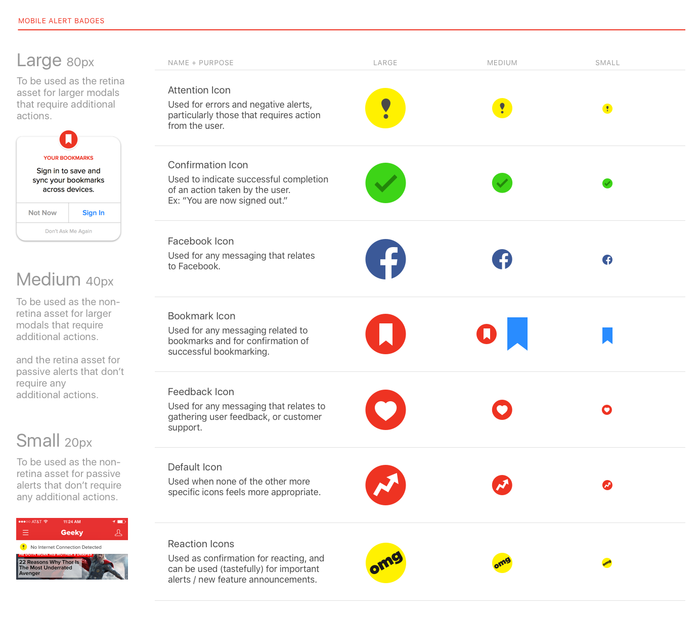

2013—2015
I joined BuzzFeed as a designer on our Apps team and worked exclusively on our flagship iOS app. During this time the Apps team didn’t have a dedicated Product Manager, but we did have a fantastic VP of Mobile Engineering and were starting to staff up on full-time iOS and Android developers. This meant that our strategy and priorities were mostly engineering driven.
Refactor/Redesign
The first major priority for our team was a refactor of the entire iOS app— a part of which involved rewriting several of our web-views as native views from scratch. The instability and slow content loading times of our web-views made this refactor a necessary step to take before introducing any new features into the app. The refactor also presented an opportunity for me to redesign existing features in tandem as engineering was rebuilding them.
The Splash
The splash unit is an editorially curated promotional unit located at the top of our homepage as well as every vertical feed. The original design of our mobile Splash unit was a miniature replica of the desktop splash unit, which utilized a “wide format” thumbnail and allowed our homepage curators to style headlines in either black on white, or white on black, with the option of adding a transparency. While the wide format worked thumbnail worked well on desktop, on our mobile apps it appeared relatively small and close in hierarchy to the individual feed cells below it. The app also featured a carousel of three additional splash stories but data showed diminishing returns on the extra items in the carousel, so we decided to nix the additional stories.
Old Splash vs. Splash 2.0
Around the same time we launched the redesigned Splash we also reversed the header colors of the iOS app to be more neutral against various content types and as an aesthetic update in line with iOS7.
Early Explorations
One of the biggest challenges in designing the Splash unit was creating a lock-up that would work well for both News and Entertainment stories, since at this time we had not yet developed a unique visual style for our News content. I explored various lock-ups on a variety of content types. In the end I convinced our editorial and product teams to allow us to use our ‘big thumbnail’ format (previously a format only used on Desktop feeds) instead of the ‘wide thumbnail’ to afford the Splash unit more hierarchy on mobile, and also allow the selected imagery to communicate the tone of the story while the text remained neutral. We kept the text background color as a tool for affordability and visual cue that the unit is actionable. Although on Desktop editors could set their transparency on a sliding scale, for simplicity’s sake on the Apps we translated any percentage of transparency under 100 on Desktop to equate to 60% transparency.
Mobile splash units for various content verticals adapted from their desktop counterparts.
Commenting
Similar to the original Splash design, our original commenting experience in the iOS app was a minimized version of the desktop web commenting experience. The grey actions and iconography appeared disabled, had small hit targets, and inconsistent copy: in some places we referred to this experience as comments, in other as replies, and again in others as responses.
Typical comments on a News article, circa 2013
I settled on calling the entire experience “Responses” to be consistent with the Desktop experience, and “Reply” for a sub-Response. I created two levels of hierarchy for the four actions associated with responses: making generous hit targets for the two more common actions (liking and disliking) and larger, more actionable looking text for the less common ones (replying and sharing, the latter of which we eventually removed). We also created a new default avatar that would appear more on-brand (originally a cat, later updated to our ambiguous person icon) than the generic greyed out avatar.
I also redesigned a native response composing flow and UI, to replace the original web view which forced users to add their comments in a non-expanding textbox.
Reacting
BuzzFeed offers a light-weight way for users to interact with stories in Reactions. Reactions work with BuzzFeed’s infamous “badges” in that data from our reactions informs which stories end up in our badge feeds. In the original app experience for Reactions, the reactions were presented as rectangular boxes in a modal that was accessed from the footer. I thought there was an opportunity here to visually tie the reactions to our badges and also try a more elegant way of displaying all the different reactions. Honestly, this idea was kind of crazy and in retrospect I’m surprised we built it. It didn’t work towards any major business goal, but it was really fun to prototype.
Image Viewer
As a part of the refactor I also worked on designs for a native image viewer in the iOS app. Previously, viewing an image in an article or list in the app had been a major pain point for users. Aside from loading in as a modal within the existing web-view, previewing an image took two extra taps because the initial tap revealed share options for that specific image (which often covered up parts of the image as well). In the native image viewer, tapping would bring up both the image preview AND the share options simultaneously. Additional use cases that had to be considered were supporting images with captions (common in news stories), credit information, photo-sets (in which multiple photos are attached to a single list item), and making sure that all the relevant metadata and actions displayed clearly on photos of varying backgrounds and proportions.
iOS Feature Launches
Another facet of our strategy at this time was partnering closely with Apple on new iOS feature launches. As a launch partner, we were frequently promoted in the App Store which worked towards our goal at the time of driving user acquisition. Some of the features I worked on for these promotions included our “Today” extension and the first version of our Watch app.
Style Guides
Around this time we had also started hiring more designers to work on apps, which prompted me to start documenting our design patterns and creating a style guide in Sketch. I also started to work on an Origami patch library for quickly prototyping in our iOS design language.
Looking Back
The year I spent designing at BuzzFeed allowed me to focus pretty heavily on micro-interactions and ramp up on various prototyping techniques, as well as evolve BuzzFeed’s visual language in a way which ultimately ended up influencing our site design as well. I would’ve have loved to have gotten to rethink the app’s overarching navigation and structure, but that wasn’t our priority at the time. However, that was one of the reasons I decided to pursue the management path at BuzzFeed, to bring a design vision and voice to strategy and roadmapping conversations and push for our product teams to take on larger, more ambitious projects. More on that, to come…